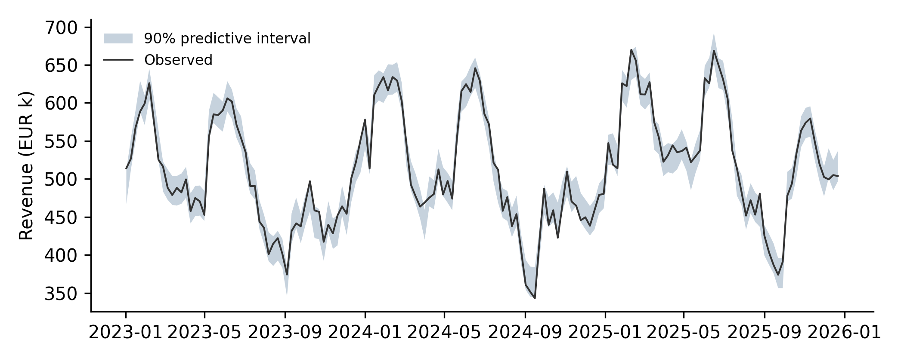
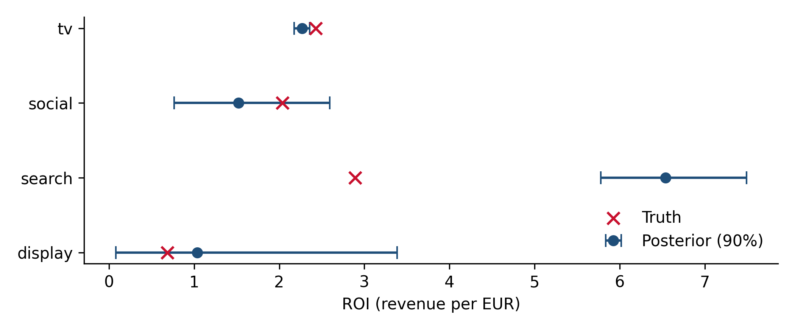

Chapter 10 Bayesian MMM in practice
The same allocation and budget-level questions as Chapter 9, answered with a model that states its assumptions as priors, reports honest uncertainty, and says plainly when the data cannot tell you something.
10.1 What priors buy you
The classical model in Chapter 9 had two failure modes. For display it produced an absurd answer with no warning. For search it produced a confident wrong answer. A Bayesian model fixes the first and makes the second easier to diagnose, but it does not fix the second on its own.
Priors help in three concrete ways:
- They rule out the impossible. Media effects are non-negative, adstock decays are between 0 and 1, and no channel plausibly drives half of revenue on a tenth of the budget. Encoding this stops the model from assigning base revenue to a constant like display.
- They make “the data says nothing” visible. When a channel’s posterior looks just like its prior, the data contributed no information. That is a finding, and it should be reported as one.
- They are the entry point for experiments. A lift test result can enter the model as a prior or as an extra likelihood term (Chapter 11). This is the main route to fixing confounded channels like search.
10.2 The model
The model below is a plain PyMC implementation of the structure from Chapter 9: geometric adstock with an eight-week maximum lag, logistic saturation, and a base with intercept, trend, two pairs of yearly Fourier terms and a promotion dummy. Revenue is scaled by its mean and spend by each channel’s maximum, so that priors can be stated on comparable scales. Writing it out by hand, rather than calling a library, makes every assumption explicit; the library equivalents come at the end of the chapter.
"""A compact Bayesian MMM in plain PyMC: geometric adstock + logistic saturation."""
import numpy as np
import pymc as pm
import pytensor.tensor as pt
L_MAX = 8
def lagged(X, l_max=L_MAX):
"""Array of shape (l_max, n_weeks, n_channels): X shifted by 0..l_max-1 weeks."""
out = np.zeros((l_max,) + X.shape)
for l in range(l_max):
out[l, l:] = X[: len(X) - l]
return out
def build_mmm(df, channels, lift=None, controls=()):
"""df: weekly data with revenue, promo and spend columns.
lift: optional dict(channel, start, end, roi, se) from an experiment, used to calibrate.
controls: optional extra control columns (standardized inside the model)."""
n = len(df)
t = np.arange(n)
y_scale = df["revenue"].mean()
y = df["revenue"].to_numpy() / y_scale
X = df[channels].to_numpy()
x_scale = X.max(0)
Xlag = lagged(X / x_scale)
fourier = np.column_stack([f(2 * np.pi * k * t / 52) for k in (1, 2) for f in (np.sin, np.cos)])
spend_share = X.sum(0) / X.sum()
coords = {"channel": channels, "week": t, "fourier": ["s1", "c1", "s2", "c2"]}
with pm.Model(coords=coords) as model:
# Carryover: TV is expected to last longer than digital channels
decay = pm.Beta("decay", alpha=np.where(np.array(channels) == "tv", 3.0, 2.0),
beta=np.where(np.array(channels) == "tv", 2.0, 3.0), dims="channel")
lam = pm.Gamma("lam", alpha=4, beta=2, dims="channel")
# Effect sizes, parameterized as each channel's average weekly contribution
# (share of mean revenue); prior scale proportional to the channel's share of spend
beta = pm.HalfNormal("beta", sigma=0.12 * spend_share / spend_share.max(), dims="channel")
weights = decay[None, :] ** np.arange(L_MAX)[:, None] # (lag, channel)
adstocked = (Xlag * weights[:, None, :]).sum(axis=0) # (week, channel)
sat = (1 - pt.exp(-lam * adstocked)) / (1 + pt.exp(-lam * adstocked))
sat = sat / sat.mean(axis=0) # rescale so that beta = average contribution
contrib = pm.Deterministic("contrib", sat * beta, dims=("week", "channel"))
# Prior on the overall level (intercept plus average media contribution), not on the
# intercept alone: a near-constant channel can then trade off against the intercept
# without moving the level, which removes a ridge the sampler otherwise struggles with
level = pm.Normal("level", 0.9, 0.3)
intercept = pm.Deterministic("intercept", level - beta.sum())
trend = pm.Normal("trend", 0, 0.3)
gamma = pm.Normal("gamma", 0, 0.2, dims="fourier")
promo = pm.Normal("promo", 0, 0.2)
mu = (intercept + trend * t / n + pt.dot(fourier, gamma)
+ promo * df["promo"].to_numpy() + contrib.sum(axis=1))
if controls:
Z = df[list(controls)].to_numpy()
Z = (Z - Z.mean(0)) / Z.std(0)
delta = pm.Normal("delta", 0, 0.2, shape=len(controls))
mu = mu + pt.dot(Z, delta)
sigma = pm.HalfNormal("sigma", 0.1)
pm.Normal("y", mu, sigma, observed=y, dims="week")
# ROI per channel over the whole period, in EUR revenue per EUR spend
pm.Deterministic("roi", contrib.sum(axis=0) * y_scale / X.sum(0), dims="channel")
if lift is not None: # experiment-implied ROI over the test window, as an extra likelihood term
i = channels.index(lift["channel"])
w = slice(lift["start"], lift["end"])
model_roi = contrib[w, i].sum() * y_scale / X[w, i].sum()
pm.Normal("lift_obs", mu=model_roi, sigma=lift["se"], observed=lift["roi"])
return model, {"y_scale": y_scale, "x_scale": x_scale}The priors deserve a word each:
- Decay: Beta(3, 2) for TV (mean 0.6) and Beta(2, 3) for the digital channels (mean 0.4). This encodes the common finding that TV carries over longer, without forcing it.
- Saturation: Gamma(4, 2) on \(\lambda\), mean 2, which puts the curve’s bend somewhere within the observed spend range rather than far outside it.
- Effect sizes: each channel’s \(\beta\) is its average weekly contribution as a share of mean revenue (the saturation curve is rescaled to average 1 over the data). Its prior is half-normal with scale proportional to the channel’s share of spend, a mild belief that bigger budgets go to channels that do more. This mirrors PyMC-Marketing’s default. It is a choice, not a law; Chapter 11 shows how to check what it does.
- Level: the prior is placed on the overall level (intercept plus average media contribution) rather than on the intercept, for a reason explained under diagnostics below.
10.3 Prior predictive check
Before fitting, simulate from the priors alone and look at what they imply for quantities you can judge: the ROI of each channel and the share of revenue attributed to media.
import sys; sys.path.insert(0, ".")
import warnings; warnings.filterwarnings("ignore")
import numpy as np, pandas as pd, pymc as pm
from pms_sim import simulate, CHANNELS
from pms_mmm import build_mmm
df, truth = simulate()
model, scales = build_mmm(df, CHANNELS)
with model:
prior = pm.sample_prior_predictive(1000, random_seed=7)## Sampling: [beta, decay, gamma, lam, level, promo, sigma, trend, y]roi_prior = prior.prior["roi"].stack(s=("chain", "draw")).values # (channel, draws)
media_share = (prior.prior["contrib"].sum(("week", "channel")).values.ravel()
/ prior.prior_predictive["y"].sum("week").values.ravel())
q = lambda a: np.quantile(a, [0.05, 0.5, 0.95], axis=-1)
tbl = pd.DataFrame(q(roi_prior).T, index=CHANNELS, columns=["5%", "median", "95%"])
print("Prior ROI by channel:\n" + tbl.round(2).to_string())## Prior ROI by channel:
## 5% median 95%
## tv 0.14 1.45 4.14
## social 0.15 1.38 4.04
## search 0.11 1.34 3.80
## display 0.13 1.45 4.04lo, med, hi = q(media_share)
print(f"\nPrior share of revenue from media: median {med:.0%}, 90% range [{lo:.0%}, {hi:.0%}]")##
## Prior share of revenue from media: median 29%, 90% range [11%, 89%]Because each channel’s effect prior scales with its share of spend, the implied ROI prior is similar for every channel, centered a little above 1 with a long right tail: a neutral starting point that does not favor any channel. Total media is expected to drive somewhere between a tenth and most of revenue, with a small chance of more than all of it.
This is the second version of the prior, and the first one is worth describing because it shows what the check is for. Initially the effect-size prior had two and a half times the scale used here. It looked reasonable written down, but its prior predictive check implied a median media share of about 72% of revenue and a 90% range reaching over 200%: a belief, before seeing any data, that media plausibly drives twice the business. Tightening the scale brought the implied quantities back into a defensible range. Nothing about the data was used to make that change; it was a correction of the prior to match what we actually believe. That is the purpose of the prior predictive check, and it is why the check comes before fitting.
10.4 Fitting and diagnostics
Fitting is a single call. Three years of weekly data with four channels samples in a few minutes on a laptop.
with model:
idata = pm.sample(1000, tune=1500, chains=4, target_accept=0.95, random_seed=3)
pm.sample_posterior_predictive(idata, extend_inferencedata=True, random_seed=3)Before reading any result, check that the sampler worked. Three checks cover most problems: no (or very few) divergent transitions, R-hat close to 1 for every parameter (chains agree), and an effective sample size in the hundreds or more (enough independent draws).
post = idata.posterior
n_div = int(idata.sample_stats["diverging"].sum())
rhat = az.rhat(post, var_names=["decay", "lam", "beta", "level", "sigma"])
ess = az.ess(post, var_names=["decay", "lam", "beta", "level", "sigma"])
max_rhat = max(float(rhat[v].max()) for v in rhat.data_vars)
min_ess = min(float(ess[v].min()) for v in ess.data_vars)
print(f"Divergences: {n_div}; max R-hat: {max_rhat:.3f}; min ESS: {min_ess:.0f}")## Divergences: 0; max R-hat: 1.004; min ESS: 2702Getting to a clean run took one change worth describing, because it is typical. The first version of this model put the prior on the intercept and produced a few dozen divergent transitions. Comparing divergent draws with the rest showed where they came from: they clustered where display’s effect was large and the intercept small. Display spend is nearly constant, so the data identifies only the sum of the intercept and display’s contribution; the sampler was exploring a long, narrow ridge between them, bounded by display’s effect being non-negative. Placing the prior on the overall level and deriving the intercept from it (intercept = level - sum(beta)) turns that ridge into a direction along which the level does not move, and the divergences disappear. When divergences appear, the fix is almost always a reparameterization or a better prior, not a higher target_accept.
Then check that the model reproduces the data it was fitted on. The posterior predictive check overlays the observed series on the model’s predictive interval. Like R², this is a necessary condition, not evidence that the decomposition is right.
import matplotlib.pyplot as plt
ppc = idata.posterior_predictive["y"].stack(s=("chain", "draw")).values * scales["y_scale"]
band = np.quantile(ppc, [0.05, 0.95], axis=1)
cover = np.mean((df["revenue"] >= band[0]) & (df["revenue"] <= band[1]))
fig, ax = plt.subplots(figsize=(7, 2.8))
ax.fill_between(df["week"], band[0] / 1e3, band[1] / 1e3, alpha=0.25, label="90% predictive interval")
ax.plot(df["week"], df["revenue"] / 1e3, lw=1, color="#333", label="Observed")
ax.set_ylabel("Revenue (EUR k)"); ax.legend(loc="upper left", fontsize=8)
plt.tight_layout(); plt.show()
Figure 10.1: Posterior predictive check: observed weekly revenue against the model’s 90% predictive interval.
## Share of weeks inside the 90% interval: 92%10.5 Results: what the posterior says
roi_post = post["roi"].stack(s=("chain", "draw")).values
classical = {"tv": 2.28, "social": 1.64, "search": 6.99, "display": 23.18} # from Chapter 9
res = pd.DataFrame({
"true": [truth["roi"][c] for c in CHANNELS],
"classical": [classical[c] for c in CHANNELS],
"posterior median": np.median(roi_post, 1),
"90% low": np.quantile(roi_post, 0.05, 1), "90% high": np.quantile(roi_post, 0.95, 1),
"prior 90% width": np.diff(np.quantile(roi_prior, [0.05, 0.95], 1), axis=0)[0],
"posterior 90% width": np.diff(np.quantile(roi_post, [0.05, 0.95], 1), axis=0)[0],
}, index=CHANNELS)
print(res.round(2).to_string())## true classical posterior median 90% low 90% high prior 90% width posterior 90% width
## tv 2.43 2.28 2.27 2.18 2.36 4.00 0.18
## social 2.04 1.64 1.52 0.76 2.60 3.89 1.83
## search 2.89 6.99 6.54 5.78 7.49 3.69 1.71
## display 0.68 23.18 1.04 0.08 3.39 3.91 3.31fig, ax = plt.subplots(figsize=(7, 2.9))
yy = np.arange(4)[::-1]
ax.errorbar(res["posterior median"], yy,
xerr=[res["posterior median"] - res["90% low"], res["90% high"] - res["posterior median"]],
fmt="o", capsize=4, label="Posterior (90%)")
ax.scatter(res["true"], yy, marker="x", s=60, color="#C8102E", zorder=3, label="Truth")
ax.set_yticks(yy, CHANNELS); ax.set_xlabel("ROI (revenue per EUR)"); ax.legend(loc="lower right")
plt.tight_layout()
plt.show()
Figure 10.2: Posterior ROI by channel (median and 90% interval) against the truth. Display’s interval is mostly prior; search’s is precise and wrong.
Compare this with the classical fit, channel by channel.
TV is close to the truth, and its interval is narrow (2.18 to 2.36). Look closely, though: the true value of 2.43 sits just above it. Even the best-identified channel absorbs a little bias from what the model gets wrong elsewhere, and a 90% interval is a statement about uncertainty given the model, not a guarantee.
Display is no longer absurd. Its posterior median is 1.04 against a true 0.68, but look at the widths: its posterior interval is nearly as wide as its prior interval. The data has told the model almost nothing about display, and the posterior is mostly the prior speaking. The correct readout is “we cannot measure display with this data”, and the correct action is an experiment, not a budget decision based on this number.
Search is still badly overstated, with a median of 6.54 against a true 2.89, and its interval is narrow. This is the dangerous case. Priors regularize; they do not remove confounding. The model sees search spend rising when revenue rises and has no way to know that both are driven by demand shocks it cannot observe. A Bayesian model is just as fooled as a classical one, only with tighter intervals around the wrong answer.
Social sits between the two: its estimate competes with the seasonal terms, and the interval reflects that.
The lesson for practice: read the posterior for each channel against its prior. A narrow posterior far from the prior means the data is informative, which is good news only if the channel’s spend is not confounded with demand. A posterior that looks like the prior means the data is uninformative. Both cases point to the same next step for the channels that matter: an experiment, which is where Chapter 11 picks up.
Taking a narrow posterior interval as proof of a well-measured effect. Interval width reflects the information in the data given the model; it says nothing about bias from a missing confounder. Search spend that follows demand will produce a tight, wrong interval in any MMM, Bayesian or not.
10.6 The same model with PyMC-Marketing
Libraries wrap this structure with sensible defaults, plotting and optimization. With PyMC-Marketing (version 1.x at the time of writing), the equivalent model is set up roughly as follows; check the current documentation, because the API evolves.
from pymc_marketing.mmm import MMM, GeometricAdstock, LogisticSaturation
mmm = MMM(
date_column="week",
channel_columns=["tv", "social", "search", "display"],
control_columns=["promo"],
adstock=GeometricAdstock(l_max=8),
saturation=LogisticSaturation(),
yearly_seasonality=2,
)
X = df.drop(columns="revenue")
mmm.fit(X, df["revenue"], target_accept=0.95, random_seed=3)
# Calibration with a lift test (Chapter 11) and budget optimization (Chapter 12)
# are built in: see mmm.add_lift_test_measurements() and the budget optimizer.Google’s Meridian takes a similar approach with a different emphasis: it is built for geo-level hierarchical data, models reach and frequency directly, and is typically parameterized with priors on ROI rather than on raw coefficients, which makes it natural to plug in experiment results as ROI priors.
10.7 Checklist
- Is every prior written down with a reason, and does the prior predictive check imply plausible ROIs and media shares?
- Were divergences, R-hat and effective sample sizes checked before reading results?
- Does the posterior predictive check cover the data at roughly the nominal rate?
- For each channel, how does the posterior compare with the prior? Which channels are data-driven and which are prior-driven?
- Which channels’ spend responds to demand? Are their estimates flagged as likely upward-biased until tested?
10.8 Further reading
- PyMC-Marketing documentation.
- Budgeting with Bayesian models (Bolt) and the HelloFresh Bayesian MMM post as production case studies.
Full links are in Appendix A.